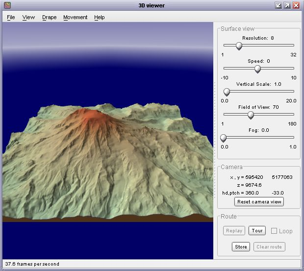
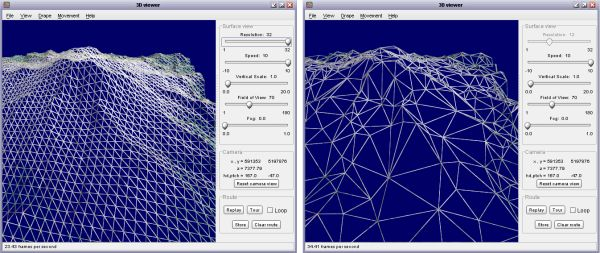
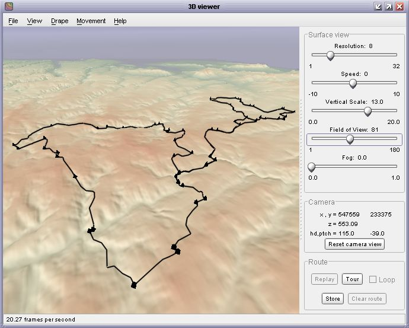
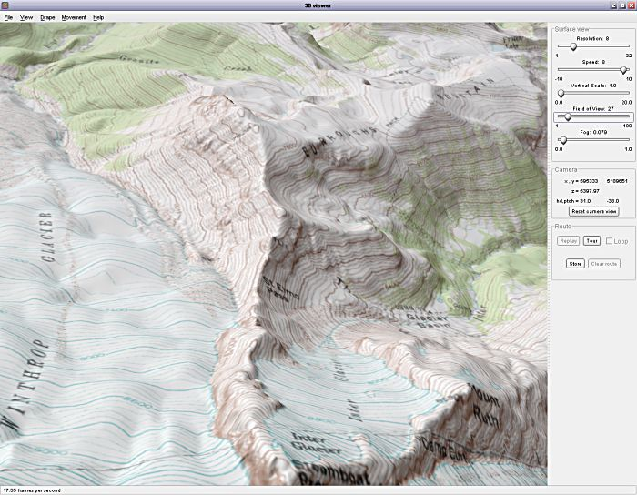
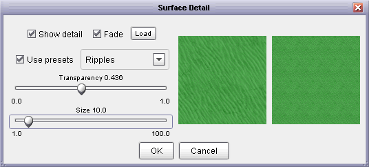
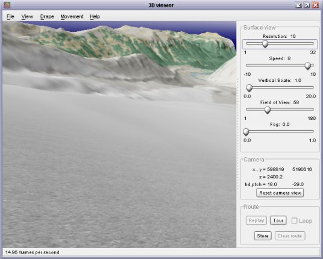
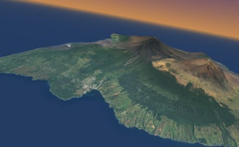
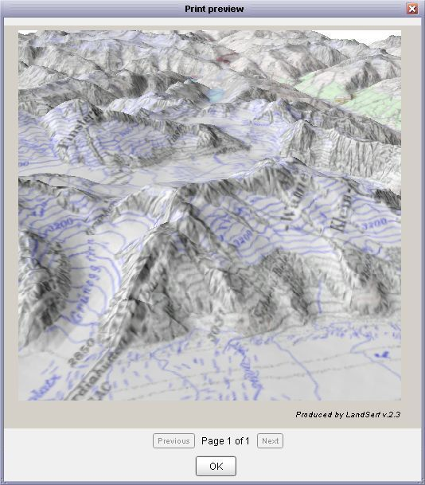
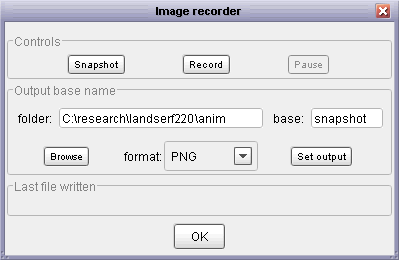

Machines with graphics cards capable of accelerating 3D graphics through OpenGL can take advantage of LandSerf's 3D viewing options. Non-accelerated graphics rendering is still possible, but in many cases will be too slow to allow much interactive visualisation.
To start the 3D viewer, a DEM must be selected as the primary raster. Optionally, a separate
drape and vector map can be incorporated into the display if present. Selecting either the
Display->3D view menu option or the
button will start the 3d viewer.
After a few seconds this should display a window similar to the one below showing the primary
raster draped with whatever was shown in the main LandSerf window.

Initial 3D view
Note that on some systems, especially Linux distributions, starting the 3d viewer can cause an error that quits LandSerf. This is usually due to some incompatibilities between the OpenGL drivers on that platform and the low-level graphics code in LandSerf. The most likely remedy is to ensure that you have up-to-date OpenGL drivers on your system.
To change the viewing position, use the mouse to control the location of the 'camera'. Navigation in three dimensions takes a little while to get used to, but the general rule for moving the camera is to think of the camera as being set in the nose of an aeroplane pointing at the centre of the viewing window.
Holding the left mouse button down while dragging the mouse up and down controls the pitch of the aeroplane. Dragging the mouse left or right controls the horizontal tilt ('yaw') and roll of the aeroplane.
To move towards or away from the viewpoint at the centre of the screen, either drag the mouse with the
right button up or down, or hold the a shift key down while dragging the left mouse button. Dragging
the mouse left or right in this way will move the camera left or right relative to your current view.
If you have a mouse wheel between the two buttons, it can be used to raise or lower the elevation of
the camera position. If you get lost at any stage, you can reset your position and viewing direction by
pressing the Reset camera view button towards the bottom of the control panel.
When you have got used to these controls, the plane can be made to 'fly' or 'drive' by selecting the
appropriate option from the Movement menu. Driving will keep the camera at ground level while
flying will allow the camera to move anywhere above the surface. The speed of the movement can be
controlled either with the mouse or the Speed slider control to the right of the view. To
stop the camera from moving select wither Hover or Walk from the Movement
menu.
Normally, the camera is kept above the surface during movement. The minimum height at which the camera
can be placed over the surface can be controlled using the Movement->Control Movement
menu item. This option also allows the amount of rolling associated with an azimuthal change in direction
to be controlled. Setting a larger rolling component can be used to simulate an aeroplane banking movement,
while a value of 0 simulates a 'helicopter turn' without rolling. The maximum animation speed can be
set from the Control Movement option, which can be useful for creating synchronised screen
grabbing animation files.
As you navigate over a surface, it is possible to record the route you take. This can be stored and later
replayed. To store a route, navigate to an appropriate starting point and press the Store
button towards the bottom of the control panel. If you navigate to a second position over the surface
and press the button again, LandSerf will store the route between the two points. Further points can be
added to build up a complete route over the surface.
To 'play back' the route you have created, press the Replay button. The camera will be moved
from the first through each of the subsequent stored points to the last recorded location. If the
loop tick box is set, the route will replay indefinitely. This is particularly appropriate
for circular routes where the first and last points in the route are at similar locations. The speed of
the replay can be controlled by Speed slider on the control panel. The playback can be
stopped at any time by pressing the Stop button and the route can be cleared from memory
by pressing the Clear route button.
Routes can be saved and loaded to /from disk by selecting the appropriate 'route' item from the
File menu. A saved route will not only store the camera trajectory, but also the other
viewing parameters such as field of view, fog setting, resolution and background colours (see below
for details of these options). If you do not wish to define or load your own route, a default circular
'tour' around the currently displayed surface can be created by pressing the Tour button
in the control panel.
The resolution of the underlying triangular mesh can be controlled using the resolution
slider to the right of the view. Generally this should be set to quite a coarse value (e.g. 16
or above) while you are positioning the view, as a fine resolution slows down the rendering
considerably. If you have created a TIN in the main LandSerf window, this can be used to represent
the surface in the 3d view by selecting View->Use TIN.

Mesh (left) and TIN (right) representation of surface shape
If a primary vector map is selected in the main LandSerf window, this will be available for display in the 3d
view. Simply select View->Show Vector to toggle its display on or off. The appearance
of the vectors can be controlled through the View->Vector appearance item. This allows
the width, height and quality of the vector lines and points to be altered. Sometimes it is possible that
parts of a vector object are obscured by the underlying surface. To avoid this, the Vector appearance
box allows you to control the clipping depth effectively allowing even parts of the vector that are 'under'
the surface to be displayed. You should experiment with the two clipping sliders to produce the best quality display.

Vector route draped over DEM in 3D view
If you wish to change the vector map displayed in the 3d view, select the appropriate vector in the main
LandSerf window and then select View->Refresh Vector in the 3d view.
The raster to be draped over the surface is, by default, the image that was last displayed in
the main LandSerf window. Alternatively a graphics file (GIF, PNG or JPEG) can be loaded from
the File menu. The quality of the drape, from whatever source, is controlled from the
Drape->Quality menu. The drape quality would not normally be set beyond
the 'very high' level, which creates a textured surface of 1024x1024 pixels. Graphics cards with
larger memories (typically 128 megabytes or greater) can also show the maximum texture size of 2048x2048 pixels.

High quality drape over DEM in 3D view
The image draped over the surface can be updated at any time by selecting the
Drape->Refresh menu item. Whatever is displayed in the main LandSerf window will be
transferred to the 3d view. For more sophisticated control over the drape, selecting
Drape->Distance drapes... allows several independent images to be draped simultaneously.
If your graphics card supports mipmapping, a different drape is displayed according to the
distance between the 'camera' and surface. Larger resolutions correspond to closer views, smaller
resolutions to more distant views. This technique ('geomipmapping') can be used to view multi-scale behaviour in a
dynamic 3d environment.
One further surface texture may be added to the 3d view. Local detail is displayed when the camera is
close to a portion of the surface model. By adding sub-cell detail here, the 'pixelising' effect of
viewing DEM cells at close range can be reduced. To change the properties of the local detail, select
the Drape->Detail... menu option, which should bring up a window similar to the one
shown below.

Local detail editor
From this window, a number of preset textures including ripples, stones, marble
and grids can be selected. Their size and transparency can be controlled using the sliders.
Alternatively, your own local texture image can be loaded and displayed by pressing the Load
button. When viewed from a distance, tiled local textures can dominate the surface view, so by default
the local texture fades with distance. This effect can be turned on and off using the Fade
option.

Surface with local 'stone' detail fading with distance
A number of viewing options control the appearance of the environment in which the surface is viewed.
The camera Field of view slider on the main control panel can be used to set the degree of
zooming of the camera lens. Wider fields of view taken with the camera close to the surface tend to
imply 'immersion' in a large terrain, while narrow fields of view ('zoom lens') suggest a smaller
physical model of a surface viewed in greater detail.
Fog can be controlled with the Fog slider, which influences the degree to which the view
becomes hazy with distance. Higher fog settings tend to reinforce immersion within the viewed scene.
The colours of the 'sea' surrounding the surface, the sky and the fog can all be altered interactively
by selecting the appropriate item from the View->Colours menu. For added realism, it
can be effective to set the sea colour to one similar to the dominant colour of the surface. This tends
to blur the boundaries at the edge of the surface model, and especially effective for island models
(see figure below).

Aerial photograph over DEM in 3D view
Images from the 3d viewer can either by directly printed or they can be captured as image files for further
manipulation. To print a 3d view select File->Print preview to preview the printed image (see
figure below), or File->Print... to send to the printer.

Print preview of 3d View
You may wish to capture output from the 3d viewer as an image or sequence of images. This is particularly useful
if you wish to create a stand-alone animation file to distribute to others without LandSerf. To configure image
output, select the File->Image Output... menu item. This should display a window similar to the one
below.

Image capture options
Clicking the Snapshot button will produce a single image identical to the current 3d display. Clicking
the Record button will take a continuous sequence of images from the 3d viewer. This can be used to build
up an animation sequence. Note that while recording in this way, rendering to screen is likely to be much slower than usual.
Recording can be stopped at any point by pressing the Pause button.
The name and location of snapshot and animation files is determined by the folder and base options.
The folder name can be entered directly or selected with the browse button. The 'base' name is that used to name
the output file. It will be appended with the number of the file being written. The format of the image file can be selected
using the drop-down menu. After changing the folder, base or format, make sure you press the Set output button
to confirm your changes. So, for example, if the folder was set to c:\anim, the base to image and
the format to JPEG, the first 3 files written would be c:\anim\image0001.jpg,
c:\anim\image0002.jpg, c:\anim\image0003.jpg. The name of the last file written is displayed at the bottom
of the image recorder window. To create a stand-alone animation file from a sequence of images, you will need to use third-party
software such as Virtual Dub to assemble the individual images into a single
animation file.